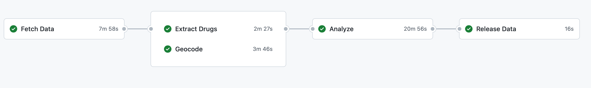

Medical Examiner Open Data Pipeline
This repository contains the code for the Medical Examiner Open Data Pipeline.
We currently fetch data from the following sources:
- Cook County Medical Examiner's Archives
- San Diego Medical Examiner's Office
- Milwaukee County Medical Examiner's Office
The results of this data are used in various other analysis here on GitHub:
- Cook County
- Where we add geospatial data to the Cook County data
- This was excluded from this automated pipeline due to specific requirements for the data for only Cook County
Getting Started
This repo exists mainly to take advantage of GitHub actions for automation.
The actions workflow is located in .github/workflows/pipeline.yml and is triggered weekly or manually.
This workflow fetches data from the configured data sources inside config.json,
geocodes addresses (when available) using ArcGIS, extracts drugs using the drug extraction toolbox
and then compiles and zips up the results into the GitHub Releases page.
The data is then available for download from the releases page page.
Further, the entire workflow effectively runs a series of commands using the CLI application opendata-pipeline which is located in the src directory.
This is also available via a docker image hosted on ghcr.io. The benefits of using the CLI via a docker image is that you don't have to have Python3.10 or the drug toolbox on your local machine 🙂.
We utilize async methods to speed up the large number of web requests we make to the data sources.
It is important to regularly fetch/pull from this repo to maintain an updated
config.json
We currently do not guarantee Windows support unfortunately. If you want to help make that a reality, please submit a new Pull Request
Workflow
The workflow can best be described by looking at the pipeline.yml file.

Requirements
- Python 3.10
- Drug Extraction ToolBox
Installation
To install the python cli I recommend using pipx.
pipx install opendata-pipeline
To install the docker image, you can use the following command:
docker pull ghcr.io/uk-ipop/opendata-pipeline:latest
Usage
Usage is very similar to any other command line application. The most important thing is to follow the workflow defined above.
Contributing
Pull requests are welcome. For major changes, please open an issue first to discuss what you would like to change.
Help me write some tests!